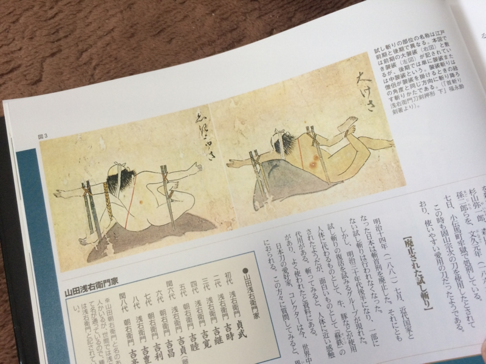

『図説・日本刀大全―決定版』
執筆日時：
")
- 作者: 稲田和彦,歴史群像シリーズ編集部
- 出版社/メーカー: 学研マーケティング
- 発売日: 2006/03/03
- メディア: ムック
- 購入: 6人 クリック: 102回
- この商品を含むブログ (14件) を見る
某ブラウザーゲームのおかげで最近は日本刀ブームらしい。自分はそのゲームはやっていないのだけど、カタナについては基本的な知識を身に着けておきたかったので（歴史モノの本読むとき、そういう知識はあった方が楽しいでしょ？）、その界隈で推薦されていたこの本を買ってみた。
とりあえず天下五剣ぐらいは全部扱ってほしかったなーと思うけれど、古代刀から旧陸軍で使われていた軍刀、刀にまつわる逸話から鑑定方法まで幅広く取り扱っていて、一家に一冊は置いておきたい内容だな！ 個人的には、試し切りの話が一番興味深かった。

以前にもちょろっと読んだことあるけれど、図解なしではこういう話は分かりにくいね。ちょっとグロいけれど。
あと、等身大の写真が折りたたみで収録されているのも面白かった。でも、おかげで判型が特殊になっていて、本棚へのおさまりが悪い……。
")
図説・日本刀大全 2―決定版 名刀・拵・刀装具総覧 (歴史群像シリーズ)
- 作者: 歴史群像シリーズ編集部
- 出版社/メーカー: 学研マーケティング
- 発売日: 2007/04/03
- メディア: ムック
- 購入: 2人 クリック: 13回
- この商品を含むブログ (7件) を見る
続編もあるッぽいので、お小遣いに余裕がある時に購入したい。

- 作者: 萌刀製作委員会
- 出版社/メーカー: コアマガジン
- 発売日: 2009/10/16
- メディア: 単行本（ソフトカバー）
- 購入: 4人 クリック: 233回
- この商品を含むブログ (18件) を見る
こっちは立ち読みしてみたい（